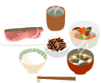

複合資格でキャリアアップ！Vol.2プラスαの複合資格
それぞれの専門分野に「食生活アドバイザー®」の知識をプラスした複合資格。生活者一人ひとりが抱えている、食や生活に関するさまざまな悩みに対して、幅広い知識を持って解決策を提供できるから、仕事の幅もグンと広がります。
- ホームヘルパー＆食生活アドバイザー®
- 高齢者や障害者の家庭を訪問し、家事や介護のお手伝いをするホームヘルパー。症状に合わせた食事の準備からコミュニケーションの提案や生活指導まで、訪問介護によるサポートを強化。
- 調理師＆食生活アドバイザー®
- 安全で安心できる食材を用いて料理を作る専門技術を身につけた調理師としてのみならずフードビジネスの戦略・展開を探り、メニュー計画や店舗運営など視野の拡大に。
- 栄養士＆食生活アドバイザー®
- 
- 食品に含まれる栄養バランスだけを見るのではなく、「食生活アドバイザー®」として安全面や環境面、経済面などのさまざまな角度から健康なライフスタイルを築くアドバイスも可能に。
- 販売士＆食生活アドバイザー®
- 販売士にとって" 選ばれる店づくり" は、重要な課題のひとつ。変化するマーケットの中で消費者の好みを的確にとらえ、食品の安全性をアピールすることがお客様からの信頼度アップに。
- アスレチックトレーナー＆食生活アドバイザー®
- スポーツ選手の健康管理やケガの応急処置、リハビリに携わるアスレチックトレーナーが、栄養・運動・休養のバランスなど食生活全般からのアプローチで、トレーニングのエキスパートに。
- 保育士、教師＆食生活アドバイザー®
- 発育期にある子どもたちの健全なココロとカラダを養う健康指導がテーマ。具体的には、食の大切さを伝える「食育」やリサイクルなどの環境教育、食事を楽しむためのマナー教育を推進。